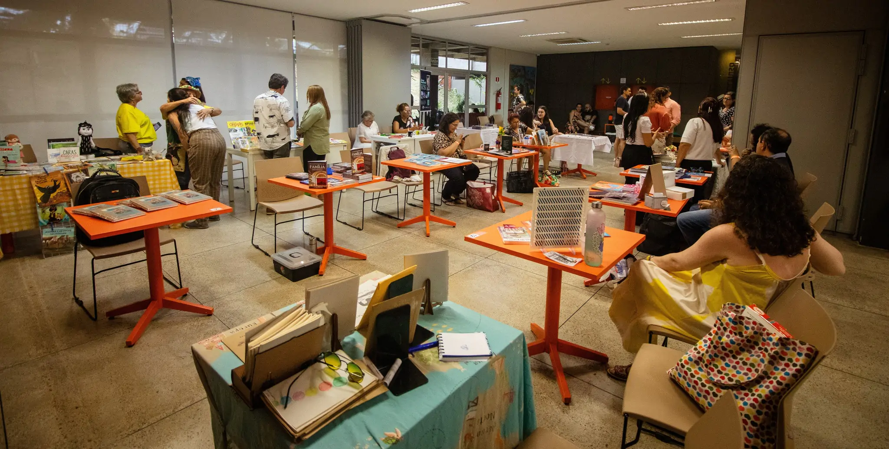
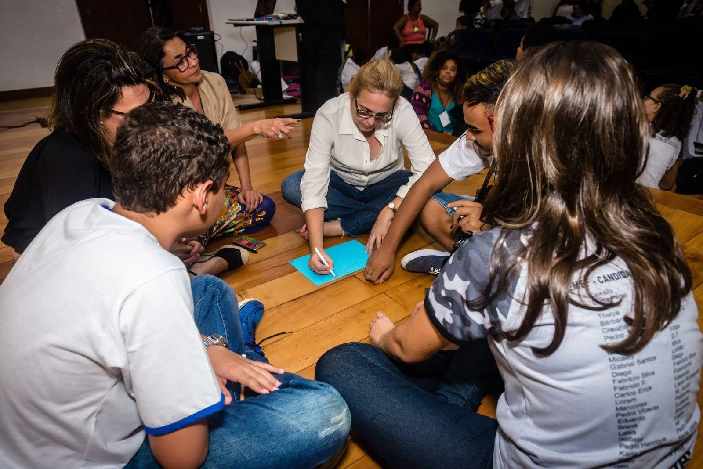
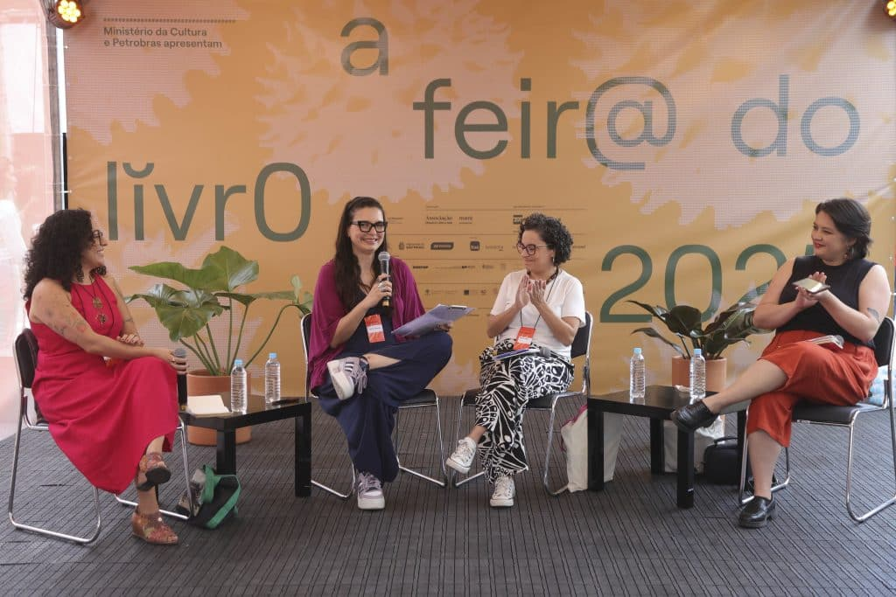
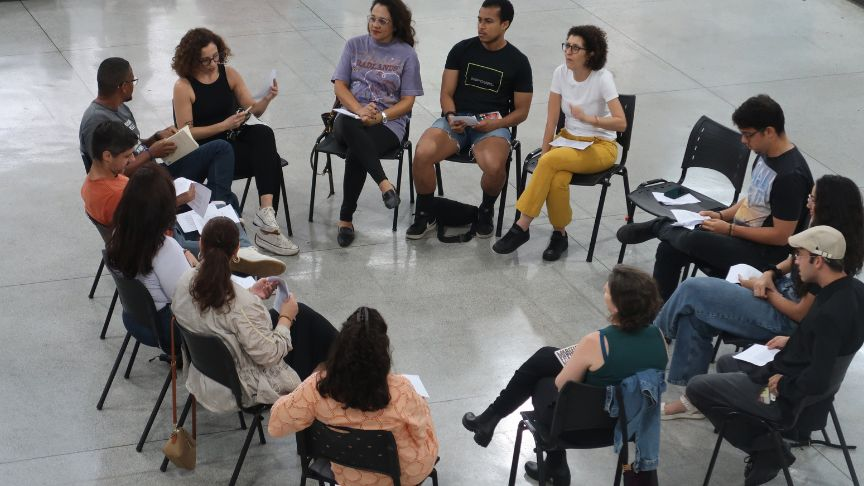
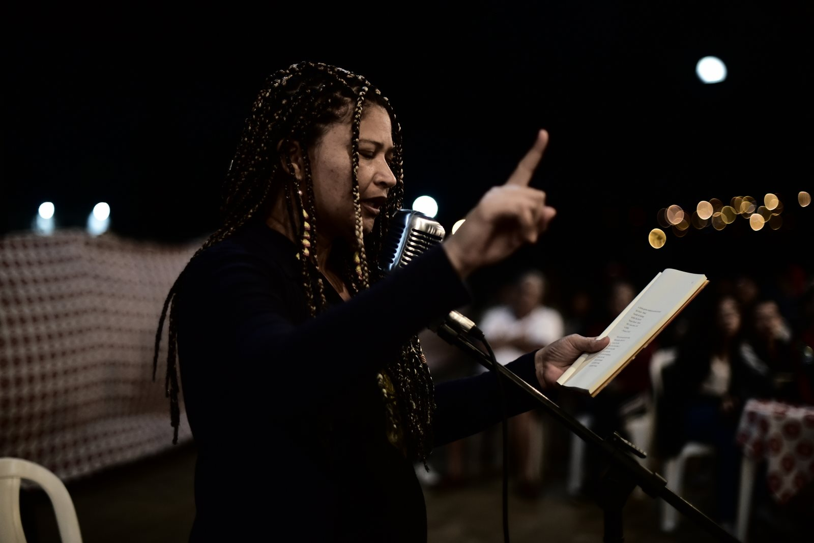
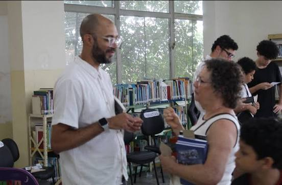
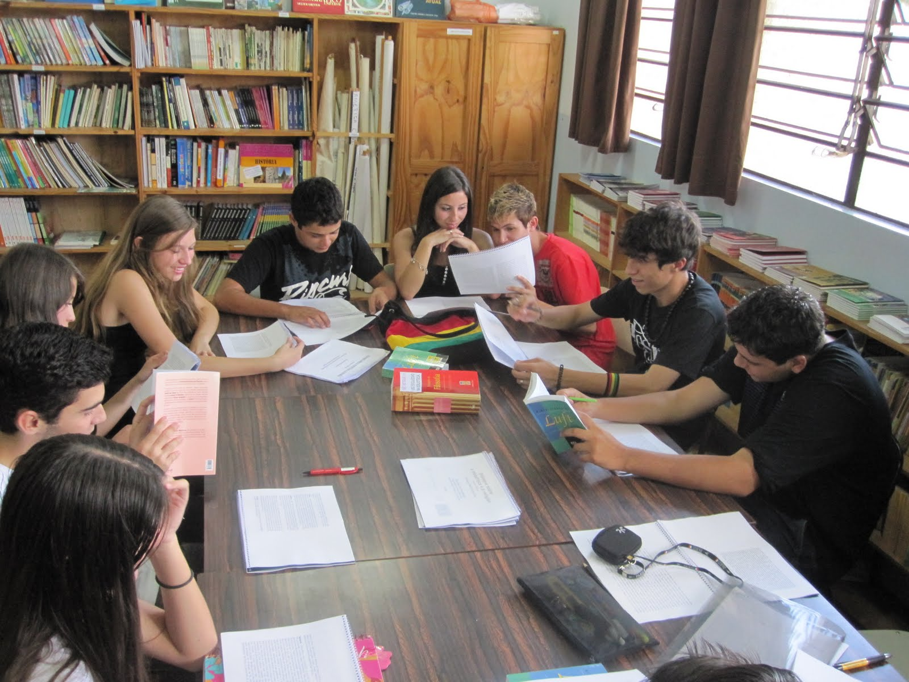

Cultura e Escrita no IFCE Maranguape
A iniciativa de Eventos Literários do IFCE Campus Maranguape é um espaço de fomento à leitura, escrita criativa e expressões artísticas. Nosso objetivo é integrar a comunidade acadêmica e externa por meio de clubes de leitura e oficinas práticas, despertando o potencial crítico e poético de cada participante. Participe das nossas atividades!

Atividades em Destaque
Oficina de Escrita

Aprenda técnicas narrativas essenciais para destravar suas ideias e começar a escrever seus próprios contos e crônicas.
Saiba maisApresentações Culturais

Espaço aberto para declamação de poesias, performances artísticas, música ao vivo e manifestações culturais dos alunos.
Saiba maisClube de Leitura Clássicos

Roda de conversa mensal dedicada a debater grandes obras da literatura brasileira e suas conexões com a atualidade.
Saiba maisCompetição de Slam

Conheça o movimento do Poetry Slam, com foco em ritmo, rima, performance corporal e poesia falada de impacto social.
Saiba maisEncontro com Autores Locais

Bate-papo exclusivo com escritores de Maranguape e região sobre o mercado editorial e os desafios do processo criativo.
Saiba maisOficina de Publicação de Livros

Oficina prática de publicações independentes feitas à mão, abordando colagem, ilustração e técnicas de reprodução.
Saiba maisProgramação
| Atividade | Data/Horário | Local/Responsável |
|---|---|---|
| Abertura Oficial e Oficina de Escrita | 24/11 às 14:00 | Auditório - Prof. Helder |
| Mesa Redonda: Literatura Cearense Hoje | 25/11 às 09:00 | Biblioteca - Prof. Alan Torres |
| Valorização de Publicações Independente | 25/11 às 15:00 | NADA - Prof. Gladson |
| Varal de Poesias de encerramento | 26/11 às 18:00 | Auditório - Grêmio Estudantil |
Contato e Inscrições
Quer nos enviar uma poesia autoral ou se inscrever nas oficinas limitadas? Mande uma mensagem para o nosso comitê.
E-mail: eventos.literarios@maranguape.ifce.edu.br